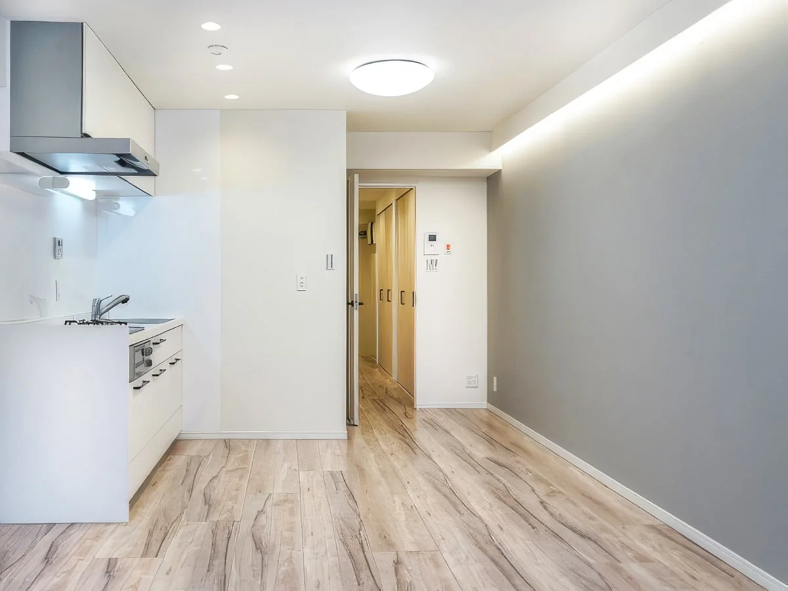
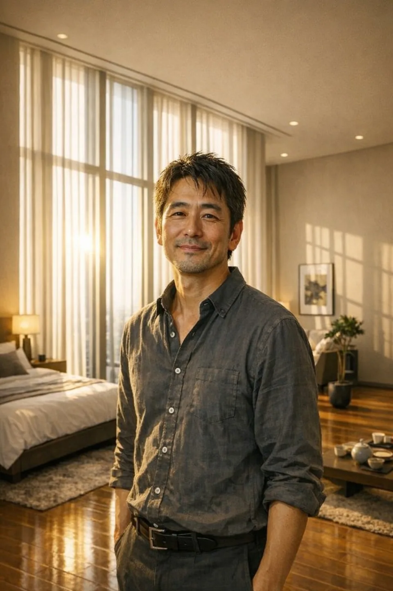

01
住まいを整える
回復や就労の土台となる住まいを大切にします。現在の生活状況をお聞きし、継続して暮らしやすい住まいを一緒に考えます。
- 住まいを探すための状況整理
- 物件・居住形態のご提案
- 契約や入居に向けた手続きの確認
支援内容OUR SUPPORT
一人ひとりの状況に合わせて、住まいと必要な支援を一緒に整えます。
FOR YOU
ご相談の利用条件は特にありません。他の不動産会社で断られた方も、ぜひご相談ください。ご本人・ご家族・支援機関からのお問い合わせを受け付けています。
OUR SUPPORT

01
回復や就労の土台となる住まいを大切にします。現在の生活状況をお聞きし、継続して暮らしやすい住まいを一緒に考えます。

02
住まいの確保から、生活の立ち上げまで。制度・医療・福祉・就労など、その方に必要な支援へつなぎます。
お仕事にお困りの場合は、住まい探しと並行して就労支援につなぎます。利用できる制度や条件は、状況を確認してご案内します。

03
入居後も、困りごとを相談できる関係を続けます。暮らしの変化に合わせて、支援のつなぎ方を一緒に見直します。
SERVICE GUIDE
東京都・神奈川県・千葉県
ご希望の地域をお知らせください。住まいのご提案は、空室状況や生活状況、必要な支援を確認したうえでご案内します。
初回相談は無料です。
その後の費用は、支援内容によって異なります。入居時の初期費用・家賃と、支援にかかる費用を分けて、相談時にご確認ください。
支援内容と費用を相談する住まい探しや手続きの確認、関係機関への橋渡し、入居後のフォローを行います。制度の利用や入居の可否は、個別の条件を確認したうえでご案内します。
上記5言語は、通訳・同行サポートが常時可能です。必要な言語や同行先をお知らせください。
その他の言語にも対応できます。まずはご相談ください。
電話受付 10:00〜17:00（日曜休業） 042-704-8308
Housing First まず、住まいから
回復や就労の前提となる、安心して暮らせる場所の確保を優先します。
入居後も面談とフォローを続け、孤立を防ぐ関係づくりを大切にします。
必要な支援へつなぎ、状況の変化に応じて暮らしを再調整します。
FOR PARTNERS
医療・福祉・就労・司法など、関係機関との連携を大切にしています。住まいの確保と、その後の生活に必要な支援を一緒に整理します。
ご紹介や支援の連携についても、電話またはメールでご相談ください。
連携について相談する